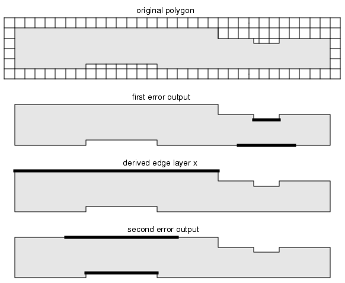
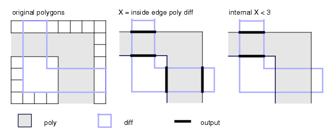
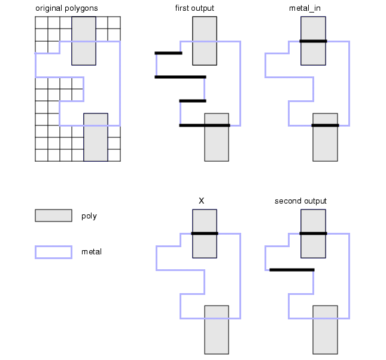

This section
contains examples of nmDRC width checks.
Minimum width
METAL_WIDTH {
//Metal width must be greater than or equal to 3 microns
INTERNAL metal < 3 ABUT < 90 SINGULAR
// Output into results database
}
Minimum gate width
Gate_Width { @ Minimum: ^gate_width um
N = NGate COINCIDENT EDGE Poly
P = PGate COINCIDENT EDGE Poly
LENGTH N < gate_width
LENGTH P < gate_width
}
Width on long objects
METAL_WIDTH {
//Metal width must be greater than or equal to 3 microns
//except where metal length exceeds 5 microns; in that
//case metal width must be greater than or equal to 4 microns.
INTERNAL metal < 3 // Output into results database
long_metal = metal LENGTH > 5 // Layer definition
INTERNAL metal long_metal < 4 // Output into results database
}
Thin metal polygons
// Find all metal polygons having a width somewhere less than 3 microns.
x = internal [metal] < 3
thin_metal_polygons { metal with edge x}
//shows whole polygons that have thin metal somewhere in their
//length, not just at the point of error
Gate width
narrow_gate {
@ Gate width, including bent gates, must be at least
@ 4 microns. Flag gates themselves, not gate edges.
gate_edge = gate coincident edge poly
short_edge = length gate_edge < 4
gate with edge short_edge
}
Width check with length dependencies
// SIMPLE METAL RULES CHECK
// Notice in the following example that the layer of origin of
// the two input layers in the second internal check is the same.
METAL_WIDTH_CHECK {
@ The width of metal must be greater than or equal to 3
@ microns except where metal edge length is greater than or
@ equal to 20 microns, in which case the metal width must
@ be greater than or equal to 4 microns.
internal metal < 3 //First Error Output
x = length metal >= 20 // Derived Edge layer X
internal metal x < 4 // <-- NOTE same layer of origin.
}
Figure 1. METAL_WIDTH_CHECK
Minimum gate length check
gate_dimension_rule {
@ Transistor gate dimension (length) between poly edges
@ must be at least 3 microns.
X = poly inside edge diff //creates derived layer X
internal X < 3 //error output
}
Figure 2. gate_dimension_rule
Wide metal1 regions
// Find metal1 regions where the width is greater than 4 um:
wide_metal1{
fat_metal1a = SIZE metal1 BY -2 // Width <= 4 goes away.
fat_metal1 = SIZE fat_metal1a BY 2
// Restore metal that did not disappear.
copy fat_metal1
}
Width with second layer overlap
dependencies
// METAL WIDTH IN POLY OVERLAP CHECK
METAL004 {
@ The width of metal must be greater than or equal to 3
@ microns except where poly overlaps metal by more than 1
@ micron, in which case the metal width must be greater than
@ or equal to 4 microns.
internal metal < 3
metal_in = metal inside edge poly
X = internal (metal_in) poly <= 1
internal metal X < 4 }
Figure 3. Width With Overlap